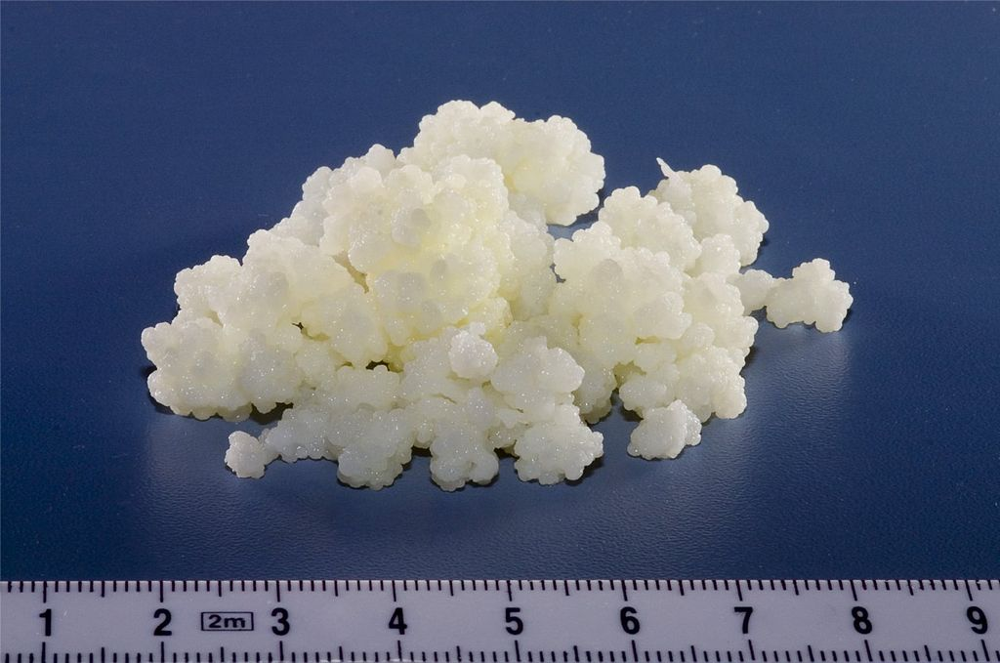

KEFİRİN İNANILMAZ FAYDALARI

Bağırsak sağlığına iyi gelir
Bağırsak Sağlığına Aids
Kefir, bağırsak sağlığına yardımcı olabilecek 30'dan fazla bakteri ve maya türü içeren güçlü probiyotik özelliklere sahiptir ve bu nedenle
çoğu kişi için sindirimi iyileştirmeye yardımcı olabilir.
Antifungal ve antibakteriyel özellikler taşır
Araştırmalar, probiyotiklerin anksiyete ve depresyonla mücadeleye yardımcı olabileceğini gösteriyor.
Probiyotikler, COVID-19 tedavisinde faydalı olabilir
Araştırmalar, kefirin bir dizi antibakteriyel ve antifungal özelliklere sahip olduğunu göstermiştir.
Bir dizi patojenik mantar ve bakteri türüne karşı test edildiğinde, kefirin mikrobiyal büyümeyi engellemede birkaç antibiyotik kadar
etkili olduğu bulundu..
Kolestrole karşı etkilidir
Koroner kalp hastalığı, batı dünyasında en yaygın ölüm nedenlerinden biridir ve yüksek kolesterol seviyelerinin başlıca katkısıdır.
Durumun riskini azaltmak için sağlıklı bir diyet ve yaşam tarzı önemlidir. Araştırmalar, sütün ve dolayısıyla kefir gibi fermente edilmiş
süt ürünlerinin kolesterol seviyelerini düşürebildiğini göstermiştir. Fermantasyon işlemi sırasında kefir taneleri, sütteki genel kolesterol seviyelerini
yaklaşık %35 ila 90 oranında azaltabilir.
B12 vitamini deposudur
B12 Vitamini sinirlerimizi ve kanımızdaki hücreleri sağlıklı tutar.En çok süt ürünlerinde bulunan kefir,çok iyi bir B12 kaynağı olabilir.
Kemikleri güçlendirir
Kalsiyum tüketmek kemikleri güçlendirir ve osteoporoz riskini azaltır.Bu yüzden kefir'in kalsiyum kaynağı olması muhteşem.
Hatta 1 bardak kefir bile,günlük kalsiyum ihtiyacının çoğunu giderebilir.